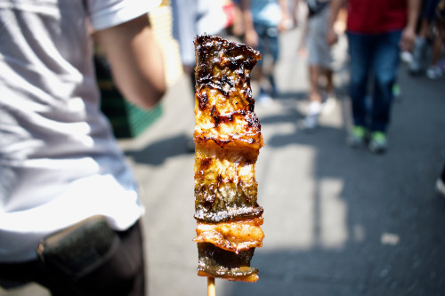

Featured Recipes
View all recipes
Ramen
Wheat noodles in a meat-based broth, with toppings such as sliced pork, seaweed, green onions, and even corn.
View recipe

Unagi Stick
Grilled unagi is prized for its rich flavor and texture – crisp on the outside and tender on the inside.
View recipe
Onigiri
Triangular rounded balls of rice that are wrapped in nori (seaweed) so that they are easier to hold. They are often used as a portable food that you don’t need chopsticks to eat.
View recipe